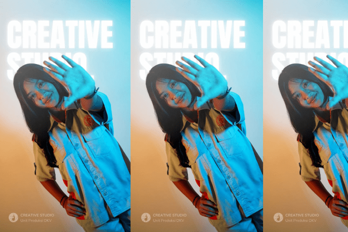

11. Desain Komunikasi Visual (DKV)
Kompetensi:
- Penulisan Naskah
- Sinematografi
- Penyuntingan
- Desain Suara
- Produksi Film
- Sutradara
- Produser
- Sinematografer
- Penyunting Film
- Manajer Produksi

12. Produksi Perfilman (PRF)
Kompetensi:
- Teknik Dasar Operasi dan Perawatan Komputer
- Mengoperasikan Software Office (Perkantoran)
- Mengoperasikan Visual Programming
- Mengoperasikan Object Oriented Programming (OOP)
- Mengoperasikan Database Programming
- Mengoperasikan Web Programming
- Mengoperasikan Advance Programming
- Web Development
- Game Development
- Application Development
- IT Consultant
- Office Administration